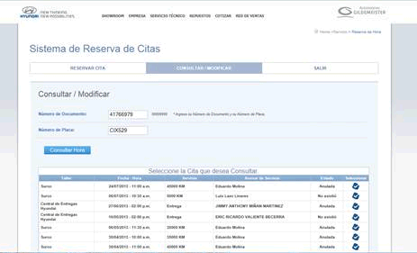

Preguntas Frecuentes
1.
No puedo acceder a la página de reserva.
Respuesta
: Haga click
aquí
2.
No recuerdo la fecha de mi cita. ¿Cómo consulto el estado de mi cita?
Respuesta
: Seleccione la opción "Consultar cita", ingrese su placa y DNI. Finalmente presione el botón "Buscar".
